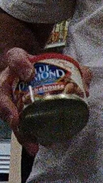
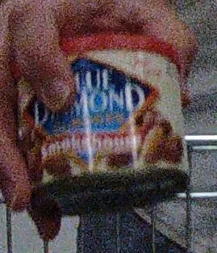
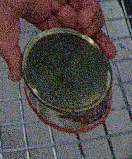
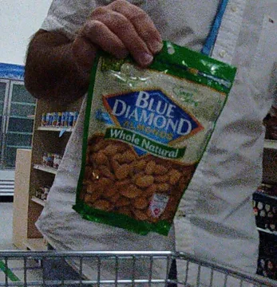
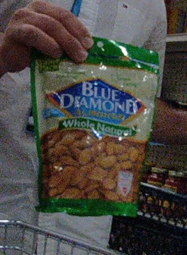
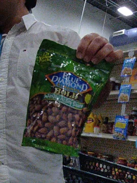
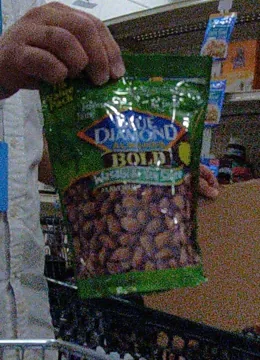

A Transferable Variant Signal
That Grocery Retrieval Cannot Reach

Artificial Intelligence Graduate Program
University of the Philippines, Diliman, Quezon City

18th Asian Conference on Computer Vision (ACCV 2026)
Oral PresentationAbstract
Automated grocery checkout requires an exact match between a camera image and a product description. Two flavors can share a logo, package shape, and most of their catalog text. When a model chooses the wrong flavor, has it lost the visual detail, or does its comparison with text fail to use it? We study this question on GroceryVision. A frozen SigLIP2 model, whose weights we keep fixed, ranks the correct description first for 81.3% of photos from brands used in training. A simple classifier that reads the same image features can distinguish variants within a known brand with 97.1% balanced accuracy, giving each variant equal weight within its brand. We then learn the directions in image features along which a brand’s variants differ and use those directions to compare photos and text from new brands. Across nine vision-language models, grouping training photos by their actual variants gives better retrieval than randomly reassigning their variant labels within each brand. On the two models we examine in detail, most of that gain comes from avoiding matches to the wrong brand. Fine-tuning the full image encoder on familiar brands also improves retrieval on new brands at the lower of two learning rates and hurts it at the higher one. The image carries information about the exact product that the usual comparison with catalog text only partly uses.
TLDR
A checkout model can recognize the brand and still ring up the wrong item. We found that its image features often distinguish the variants it confuses. We learned directions from differences within a brand and used them to recognize products from other brands. Most of the improvement came from avoiding matches to the wrong brand. When we narrowed the catalog to the correct brand, the gain in choosing the right flavor, size, or package was much smaller.
Which Starbucks roast is in the bag?
Original variant labels
- Sumatra0.4920
- Pike Place0.4663
- Breakfast Blend0.4373
Shuffled variant labels
- Pike Place0.4608
- Sumatra0.4409
- Breakfast Blend0.3625
Motivation
A grocery receipt records a particular item, down to its flavor, size, or packaging. In an automated checkout, a camera supplies a photograph of the product and the store supplies a catalog of written descriptions. Matching an image to a catalog entry across these two kinds of input is called multimodal product retrieval (MPR). The photo may include a hand over the label, while several descriptions in the catalog may differ by a single word. [1]
Our earlier study of 190 image encoders gave us a clue. The share of photos with a correct match in the first five results was 17.5 percentage points higher than the share with a correct match in first place. The right item was often within reach. Why did another description outrank it? [2]
Consider two Campbell’s soups. Their red packaging can help a model find Campbell’s, yet the flavor determines which soup the shopper bought. We kept the image encoder fixed and separated two questions. Could we identify the variant from the image features alone? And if we learned which visual differences mattered for familiar products, could we use them to recognize products from another brand?
Try the camera’s view of the shelf
Video explainer
Read the transcript
A Transferable Variant Signal That Grocery Retrieval Cannot Reach.
At a camera-based checkout, a shopper takes one product off the shelf. Which catalog entry belongs on the receipt? Matching a store photograph to a catalog description is called multimodal product retrieval.
Frozen encoders turn photos and descriptions into vectors. The closest direction wins. This is tomato soup. Chicken noodle comes first. Was the flavor missing from the image features, or lost in the match to text?
With the image encoder frozen, fit a linear classifier to labeled photos of variants within one brand. Only its weights change. Test it on different photos of those variants. It reaches 97.1 percent balanced accuracy on seen brands. Each variant counts equally. The probe needs that brand's labels. What can carry over without refitting?
Average the normalized photo vectors for each product. Within each brand, subtract the mean of its product averages. Each arrow now shows one variant's departure from its brand. Stack them as rows. The columns are the frozen image feature coordinates.
Split that matrix with a singular value decomposition. U gives the signed pattern across variants for each direction. Sigma gives its strength. The rows of V transpose give the directions in the original feature space. We keep the strongest 64 directions.
Starbucks contributed no photos to this fit. Using those same axes, project its photos and the catalog texts, normalize, and score by cosine. For these ten Sumatra photos, the mean projected photo points closest to the Sumatra description.
For a control, shuffle labels among photos within each training brand, keeping group sizes fixed. Fit the axes again. Project the same Sumatra photos again. Now Pike Place comes first.
We held out different brands on ten splits. For SigLIP2, the gain over shuffled labels was 13.6 points across the catalog, and 3.9 once the brand was given. We learned these directions from differences within a brand. On new brands, they mostly helped choose the brand. The full embedding still ranks best.
How does a photo become a catalog match?
A vision-language model such as SigLIP2 has two encoders. Each turns its input into a list of numbers called a vector. The store can encode its descriptions in advance. When a photo arrives, the model compares the direction of its vector with the direction of each description’s vector. This measure of alignment is cosine similarity. The closest direction gets first place. In the GroceryVision experiment, we prepared a description for each product from its catalog fields and one example photo. At retrieval time the candidates are texts. [3] [4]
Can the image features identify the variant?
To find out, we took the catalog text out of the experiment. We passed labeled photos from one brand through the frozen image encoder. Using six photos per variant, we trained a linear probe, a classifier that learns one weighted sum of the image features per variant. On a fresh photo, the variant with the highest score is its prediction. Only the classifier learns weights. [5]
Try the test on three varieties of Blue Diamond almonds. With shuffled labels, we randomly reassign the variety names among the training photos, preserving six of each name, and fit a second classifier. The twelve test photos and their correct answers stay the same.
Fit on 18 photos
Each row carries the name used to train the classifier.
Smokehouse






Whole Natural






Wasabi & Soy Sauce






Test on a different photo

Photographed variety
Smokehouse
Classifier’s prediction
Smokehouse
With the original labels the classifier identifies all 12 test photos. With shuffled labels it identifies 5 of 12.
How we fitted this example
We used ten photos of each variety and set aside four from each before training. We standardized the frozen image features using the 18 training photos, then fitted multinomial logistic regression. The second fit uses exactly the same photo vectors after a single shuffle of the training labels. The twelve predictions above illustrate the procedure for one brand. Table 1 reports the larger experiment across brands and three training runs.
Across the study, the SigLIP2 probe reached 97.1% balanced accuracy. We calculated the fraction correct for each variant, averaged within each brand, then averaged across brands. The checkout model’s 81.3% Recall@1 answers a harder question. It must rank the correct description first in the entire catalog, using text and without being told the brand. The probe tells us that variant information is available in the image. It leaves open how much of it a store could use on a brand it has never trained on. Paper, Table 1.
What is subspace transfer?
We wanted to learn something about how variants differ that might apply to another brand. For each training product we averaged its photo vectors. Then we subtracted the average of the variants belonging to its brand. What remains for each product is its departure from its own brand’s center. Pool those differences across brands and some directions account for more of the variation than others. The space spanned by the leading directions is our variant subspace.
To test transfer, we fix those directions and use them to measure both a photograph from a new brand and the catalog descriptions it could match. No photo of that brand helped choose the directions. The rank is simply how many directions we keep. Rotate the view below and follow the four steps. Paper, §4.2.
One point per product
The dots are individual store photos of Blue Diamond and Ocean Spray products. The larger marks are the means for the six variants, three per brand.
The display uses three coordinates of the original 1,536. Two are the leading directions learned in the experiment. The third separates the two training brands shown here. The flat plane illustrates what projection keeps.
What do U, Σ, and V represent here?
Stack the centered product vectors into a matrix D. Each row represents one training variant. Each column is a coordinate of the frozen image encoder. A singular value decomposition writes this matrix as
D = U Σ VT.
- V
- Each column is a direction in the original feature space shared by photos and catalog text. These are the axes we can take to a new brand.
- Σ
- Each diagonal value measures how much the training variants vary along its direction. The largest values come first.
- U
- Each row belongs to a training variant. It gives that variant’s signed weights along the directions. Multiplying by Σ gives the variant’s actual coordinates relative to its brand’s center.
Keeping the first k columns of V gives a rank-k subspace. We project a new photo vector and every catalog text vector directly onto those columns, without subtracting a training mean. We then give each projection unit length and compare the directions. Supplement, §S2.
Can the directions distinguish three roasts of coffee?
Suppose the checkout has already identified the brand. What information is left to choose the roast? In this trial, Starbucks was one of the brands set aside for testing. We learned the directions from other brands, then used them to rank descriptions for each coffee photo. For the control, we shuffled variant labels among the training photos of each brand and learned a fresh set of directions. The photos, brands, and number of examples per variant stayed the same.

Ranked descriptions
Sumatra ranks first among three descriptions for this photo.
- Sumatra 0.4415
- Breakfast Blend 0.4398
- Pike Place 0.4091
Read the top catalog description
The product is a white bag of Starbucks Sumatra coffee featuring a green logo and a dark label with gold text.
With 64 directions and only the three roasts in the catalog, the original labels give 29 correct matches in 30 photos. The displayed shuffle gives 16. We chose this example because it had the largest gain within one brand among the eligible cases. The results below include every eligible test brand. Paper, Figure 2.
What carries over to a new brand?
If we tell the system which brand is in the photo, can it still choose the right product? To find out, we ranked the same photos twice. First, every description in the catalog could win. Then we gave the model the correct brand and asked it to choose among that brand’s products.
We repeated the experiment ten times, changing which brands we learned from each time. Each brand split puts whole brands in three groups. One group supplies training photos, one is reserved for choosing model settings, and one supplies the test photos. All variants of a brand stay together within a trial. In the subspace comparison, every test photo belongs to a brand that supplied no photos for learning the directions.
If the variant names taught us nothing, randomly reassigning them among the training photos of each brand should have made little difference. We kept 64 directions in both versions. In all nine models, the correct names helped more test photos find the right description on average. For the two models we examined closely, giving the system the brand name removed about seven tenths of that advantage. SigLIP2’s gain fell from 13.6 to 3.9 percentage points. MobileCLIP’s fell from 4.5 to 1.2. Paper, Figure 3. [6]
Most of the gain comes from telling brands apart
Gain in Recall@1 over shuffled variant labels (percentage points)
SigLIP2-gopt-384
MobileCLIP-B
How can a direction learned from variants end up helping with brands? Subtracting a brand’s average removes its position from the training data. A direction along which its products vary can still be one along which two other brands differ. The catalog comparison tells us which mistakes the directions help correct. Assigning a specific meaning, such as package color, to an individual direction would require further evidence. Paper, §4.2.
How many directions does retrieval need?
Choose a model and the number of directions it can use. The first two rows compare how we grouped the same training photos. The third uses directions chosen at random. The last lets the model use all its original coordinates. Keeping more directions improves retrieval in this range, but the complete vector still gives the highest accuracy.
| Features used for matching | Correct first match (Recall@1) ↑ |
|---|---|
| Directions from original variant labels | 51.7% |
| Directions from shuffled variant labels | 38.1% |
| Random directions | 8.8% |
| All original model features | 73.6% |
With 64 directions, the correct description comes first for 51.7% of photos with original labels and 38.1% with shuffled labels.
Does better retrieval on familiar brands carry over?
A learned linear map raised SigLIP2’s first-choice accuracy on familiar brands from 81.3% to 98.9%. Applied to new brands, that same map lowered accuracy from 78.7% to 58.3%. Updating all the image encoder’s weights (fine-tuning) also depended on the size of the training updates, or learning rate. A smaller update worked better on new brands. ProxyNCA, which learns a representative vector for each training product, improved on the frozen model at both rates shown. [7]
| Image model | Learning rate | Brands used for training Recall@1 ↑ | Brands set aside for testing Recall@1 ↑ |
|---|---|---|---|
| Frozen SigLIP2 | — | 81.3% | 78.7% |
| Linear map (GA) | — | 98.9% | 58.3% |
| Full fine-tuning | 5 × 10−5 | 99.6% | 72.1% |
| Full fine-tuning | 2 × 10−5 | 98.1% | 83.9% |
| ProxyNCA | 5 × 10−5 | 90.5% | 84.5% |
| ProxyNCA | 2 × 10−5 | 89.9% | 87.6% |
We fixed the lower rate after inspecting test results from the first three trials. The ten-trial average includes those trials. Paper, §5. Download the table (CSV).
What this means for checkout
When a checkout confuses two soups, it is worth testing what the image features retain before retraining the encoder. The probe could read differences that image-to-text retrieval missed. The text side offers a clue. In one SigLIP2 trial, descriptions from the same brand pointed in much more similar directions than descriptions from different brands (mean cosine similarity 0.733 versus 0.465). Two descriptions can therefore compete closely even when the photo contains the detail that distinguishes them. For a store adding new products, the decisive test is whether the model can still choose the right flavor, size, or package after the brand is already known. Paper, §4.2.
References
- GroceryVision organizers. The 4th GroceryVision Challenge, Track 2. ICCV RetailVision Workshop, 2025.
- E. G. Maminta and R. O. Atienza. What Matters for Grocery Product Retrieval with Open Source Vision Language Models. ICPR 2026.
- A. Radford et al. Learning Transferable Visual Models From Natural Language Supervision. ICML, 2021.
- M. Tschannen et al. SigLIP 2: Multilingual Vision-Language Encoders with Improved Semantic Understanding, Localization, and Dense Features. 2025.
- G. Alain and Y. Bengio. Understanding Intermediate Layers Using Linear Classifier Probes. 2016.
- P. K. A. Vasu et al. MobileCLIP: Fast Image-Text Models through Multi-Modal Reinforced Training. CVPR, 2024.
- Y. Movshovitz-Attias et al. No Fuss Distance Metric Learning Using Proxies. ICCV, 2017.
- Y.-W. Chao et al. DexYCB: A Benchmark for Capturing Hand Grasping of Objects. CVPR, 2021.
Citation
@inproceedings{maminta2026variant,
title = {A Transferable Variant Signal That Grocery Retrieval Cannot Reach},
author = {Maminta, Emmanuel G. and Atienza, Rowel O.},
booktitle = {Proceedings of the Asian Conference on Computer Vision (ACCV)},
year = {2026}
}